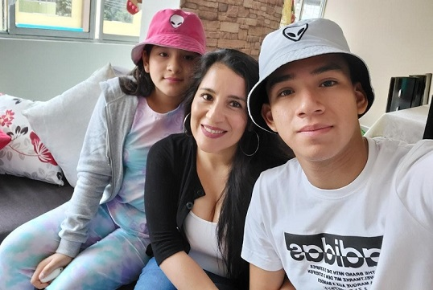

Hola!, Mi nombre es Armando Emanuel Guerra Serrano, tengo 17 años de edad y vivo actualmente en el distrito de San Juan de Lurigancho junto a mi mamá, mi hermana y mi perro. Estudio Ingeniería de Sistemas de Información en la Univerisdad San
Ignacio de Loyola.
Desde muy pequeño fui muy apegado a la tecnologia, sobre todo a las computadoras ya que estaba muy interesada en saber como funcionaban y que habia debajo de ellas.
El gusto por la programación nació gracias a mi padre el cual se dedica al desarrollo de software, el me enseño a escribir mis primeras líneas de código y en lo que consistia este extenso mundo y en todo lo q conllevaba.
Y cuando comenzé mi vida universitaria no lo pense dos veces y elegí esta carrera la cual me ha gustado hasta el momento.
Entre mis actividades diarias se encuentran:
- Programar
- Hacer deporte
- Estudiar
- Ver televisión
Esta es mi familia:
